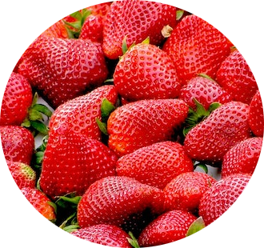

Frutas vermelhas
Morango

O morango é uma fruta vermelha, cuja a origem é a Europa.Produzida pelo morangueiro, é um fruto rasteiro.
Entre os principais benefícios no consumo regular do morango, podemos citar:
- Fortalecimento do sistema imunológico.
- Auxílio no bom funcionamento do sistema digestório.
- Ação anti-inflamatória.
- Auxilio no processo de cicatrização de ferimentos.
Quer saber mais? Click nos links abaixo
-
 Produtores de morango Instagram
Produtores de morango Instagram
-
Cultivo do morango Youtube
-
E-book sobre o plantio do morango: